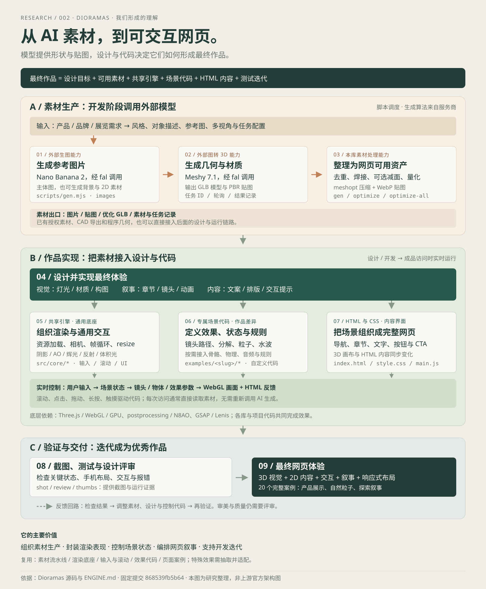

提供形状与视觉素材
生图模型提供参考图、背景或产品图片；图转 3D 服务提供几何与 PBR 贴图。部分角色资产还可带骨骼或动画。生成能力来自外部服务，模型并不包含完整的网页设计与交互规则。
一个关于「最终作品如何形成」的研究
Dioramas 将素材流水线、共享实时引擎与 20 个网页案例连接起来。外部模型生产素材，设计与代码定义画面、行为和内容。我们研究的是：同一份素材，如何被持续设计与控制，形成完整网页。
我们形成的理解
模型提供几何、贴图与可选动画
材质、灯光、阴影与后期共同塑形
镜头、场景状态与交互建立叙事
01 / OUR UNDERSTANDING
我们的理解是：调用生图与图转 3D 模型生产素材，处理成网页可用资产，再通过设计、共享引擎、场景代码和 HTML 内容，形成最终的网页效果。这里的“生成”分为模型生成素材与浏览器计算画面；两者发生在不同阶段。
设计目标 + 可用素材 + 共享引擎 + 场景代码 + HTML 内容 + 测试迭代

生图模型提供参考图、背景或产品图片；图转 3D 服务提供几何与 PBR 贴图。部分角色资产还可带骨骼或动画。生成能力来自外部服务，模型并不包含完整的网页设计与交互规则。
开发脚本组织生成任务、参数、结果记录与素材优化；共享代码管理渲染和输入；案例代码实现专属效果。模型接入后的材质调整、镜头、灯光、状态和内容关联，都有具体工程工作。
对象放在哪里、用什么灯光、滚动时看哪里、点击后发生什么、文字怎样排布，需要设计并落实到代码。生成任务脚本的输出是素材；优秀的页面由构图、叙事、内容和迭代共同形成。
成品加载已有资产，用户输入改变场景状态，程序逐帧更新镜头、物体与效果参数，WebGL / GPU 绘制画面，HTML 同步说明与界面。普通浏览、滚动和点击通常无需再调用生成模型。
素材生产流水线、渲染底座、输入与滚动、状态控制、特效实现、完整页面案例和开发工具，都可按需求迁移。已有授权 GLB、CAD 导出或程序几何也能接入；特定效果需要抽取案例逻辑、准备合适资产并适配。
总览图为本次研究整理，依据固定提交的 素材脚本、引擎文档、案例代码与开发工具；并非上游官方架构图。
RESEARCH ABSTRACT / 完整研究摘要
02 / CAPABILITIES & MODULES
调用生图与图转 3D 服务，记录任务状态，下载结果并优化模型。AI 生成算法来自外部服务。
在 Three.js 上封装渲染循环、环境光、模型处理与后期；部分光束、反射和程序纹理由自定义代码提供。
把滚动、鼠标与触摸转成镜头、物体和场景变化。20 个案例提供各自的叙事与交互实现。
它的工程价值在于组织素材、封装表现、控制状态、编排叙事。部分能力来自成熟库，部分效果由项目自行实现；许多特殊交互位于示例目录，提炼成通用模块仍需要开发。
共享文件提供多个作品都能使用的能力。素材任务与截图工具运行在开发阶段，作品专属规则和网页内容位于案例目录。
| 模块 | 已有职责 | 作品仍需配置或实现 |
|---|---|---|
| engine.js | 渲染器、相机、帧循环、尺寸适配、环境与后期、模型规范化。 | 场景对象、视觉参数、灯光构图与每帧更新逻辑。 |
| assets.js | GLB / 贴图加载与解码、进度、模型表面采样。 | 资产地址、对象选择、部件语义与加载策略。 |
| input.js | 指针位置、速度、按下状态与平滑值。 | 命中检测、输入到行为的映射、限制和反馈。 |
| scroll.js | Lenis 与 GSAP、页面 / 元素进度、文字显现。 | 章节范围、镜头路径、关键状态与叙事节奏。 |
| ui.js | 加载界面、光标、磁吸按钮、案例导航。 | 文案、排版、按钮逻辑、触摸与键盘等效操作。 |
| reflector.js | 平面镜像渲染，材质反射接入与粗糙度模糊。 | 反射面、隐藏对象、扭曲、分辨率与性能预算。 |
| volumetric.js | 结合深度的射线步进光束与雾感。 | 光源、密度、范围、噪声与场景接入。 |
| textures.js | GPU 烘焙的程序噪声纹理与法线。 | 具体材质公式、尺度与视觉参数。 |
| worlds.js | 20 个案例的名称、标识与导航信息。 | 新增作品的入口、内容与场景实现。 |
依据 ENGINE.md / Core API。水波、液体、机芯分解、物理、音频和规则等特殊效果还需阅读案例辅助模块。
03 / UNDER THE HOOD
制作阶段 生成与处理素材
访问阶段 浏览器实时运行
AI 在制作阶段参与成品网页读取已生成素材。普通滚动与点击由浏览器代码执行，无需每次访问调用 AI。
视觉互动由程序定义模型具有形状与材质；水波、分解、镜头路径和触发条件需要对应实现。
页面仍有 HTML 内容固定的 3D 画布承载场景，文字、按钮和章节在 HTML 层排布与滚动。
SHARED ENGINE / 对“引擎”的理解
底层的 Three.js / WebGL 提供图形能力，Dioramas 在其上封装共同的运行机制。每个作品继续添加自己的状态、效果和内容。页面的排版、触发条件与行为规则由对应代码定义。
engine.js：相机、帧循环、尺寸适配、环境光与后期。assets.js：模型 / 贴图加载、进度和表面采样。
input.js：指针位置、速度、按下状态和平滑值。scroll.js：Lenis、GSAP、章节进度与文字显现。
ui.js：加载界面、光标、磁吸按钮与案例导航。具体网页布局和内容仍在各案例中实现。
reflector.js：平面反射；volumetric.js：体积光；textures.js：程序纹理。案例按需接入与调参。
指针模块提供按下状态 → 场景代码累计蓄力值 → 更新发光、灯光、粒子与动画 → 引擎绘制新画面。蓄力速度、上限、释放行为和提示文字，属于这个作品的设计与专属代码。
共享模块依据 ENGINE.md 的 Core API。上例是对职责的解释，具体效果以案例实现为准。特殊水波、液体、分解、音频和游戏规则分布在各案例与依赖中。
这些工具主要在开发阶段运行，协助制作与评审网页。浏览器访问成品时主要运行场景和界面代码。
| 工具 | 做什么 | 产出 / 使用边界 |
|---|---|---|
| gen.mjs | 按任务配置调用生图与图转 3D 服务，保存结果；Meshy 任务记录 ID 并轮询。 | 参考图、原始 GLB、manifest；生成算法与费用来自外部服务。 |
| optimize.mjs | 去重、焊接、可选减面、量化、meshopt 与 WebP 压缩。 | 适合网页传输的模型；压缩结果仍需在目标设备测试。 |
| optimize-all.mjs | 批量优化模型并按案例整理，跳过已更新的输出。 | 各案例的优化模型目录；更换项目时需调整目录映射。 |
| shot.mjs | 在指定视口、滚动位置与鼠标 / 点击状态下截图，采集报错和运行信息。 | 状态截图、帧率等证据；用于检查实际可见结果。 |
| review.mjs | 拍摄多个桌面滚动状态与手机页面，汇总截图、帧率和报错。 | 评审图与运行记录；审美、完整性和交互质量还需要评审。 |
| contact.mjs | 把多张截图拼成一张联系表，方便比较状态与构图。 | 评审拼图；帮助发现变化和问题。 |
| thumbs.mjs | 捕获各案例指定画面，输出图库缩略图。 | 当前“已有效果”中的 20 张上游图片来自该截图链路。 |
工具含上游目录、端口及 Chrome / GPU 参数，迁移时需要适配环境。本次没有执行上游素材生成或下载模型；图示是制作机制的说明。
04 / EXISTING WORK
直接浏览全部 20 个案例的上游截图，点击画面可放大并切换案例。图片每张约 50–181 KB，总计约 1.8 MB；不加载模型。特色交互按 README 整理，完整交互可沿源码继续研究。
几何与材质、着色器与粒子、镜头与状态动画、HTML / CSS 与文字滚动共同构成页面；部分案例还接入物理、音频或游戏规则。原项目展示的是完整网页，当前图库呈现其静态画面。
图源：Dioramas / 上游案例截图，CC BY 4.0，未修改。静态截图呈现画面；本次未逐一运行上游网站。“已阅读源码”表示检查了相关代码。
05 / WHEN TO USE IT
香水、手表、鞋、机械设备的新品介绍。通过镜头与局部互动突出材质、结构和品牌氛围。
线上展览、文物讲解、艺术专题、活动体验。用探索、灯光与章节状态组织叙事。
产品售前与部件认知。需要有结构信息的分件模型，再增加热点、分解动画和内容映射。
重视视觉体验与探索的场景更容易受益。表格后台、快速信息检索和低性能设备优先的业务页面，采用这套重视觉方案前需要权衡加载、易用性与开发成本。
06 / VALUE & TRANSFER
它提供了从素材到体验的工程连接，也保留具体作品的实现参考。下面说明可借鉴的价值与成立条件；本次没有验证效率提升、营销转化或所有设备的性能。
更换灯光、镜头、材质、状态与文字，就能形成产品展示、结构讲解或主题叙事。已有授权素材与程序几何也能接入，素材来源有选择空间。
成立条件：资产质量、结构和授权满足场景需求。共享资源加载、渲染循环、尺寸适配、后期、输入和滚动，让新作品沿用共同的运行接口。场景与设备参数依然需要单独配置。
成立条件：明确模块接口、版本和性能预算。镜头看哪里、何时展开、长按多久、粒子如何变化、内容何时出现，都能在代码中定位和调整。最终质量来自设计判断与持续检查。
成立条件：开发者理解视觉、动画和交互关系。将命中的部件或场景状态映射到文字、热点与界面，适合产品探索和结构认知。本地泵实验用部件 ID、展开比例和流向状态验证了这条连接。
成立条件：准确语义、可发现的操作和等效输入。生成记录、优化结果、指定状态截图、移动界面与报错信息，帮助追踪素材和发现实现问题。工具采集证据，评审判断作品是否完整、好用和美观。
成立条件：记录版本与环境，针对意见再次验证。从现有几何开始，保留对象 ID、状态、镜头、说明与清理接口，再替换适合的素材。泵模型已拆成独立工厂与部件说明，可由宿主传入 Three.js。
下一步：用另一份授权资产验证接口与效果适配。先明确用户要看什么、操作什么、获得什么说明；选一份合适素材，完成一个关键交互并实测，再扩展视觉效果。设备参数、数据接入与专业仿真需另外提供；项目的素材与引擎能力不能自动保证这些结果。
06 / REUSABLE BUILDING BLOCKS
| 技术 / 效果 | 上游位置与来源 | 如何迁移 | 本次实验 |
|---|
“独立实现”表示参考原理重新编写，本实验没有直接复制 Dioramas 引擎代码。第三方库保留各自许可。
07 / SCENE LAB
真实需求：设备供应商向客户介绍供水泵，培训人员认识主要部件。把产品展示、结构讲解与流向说明放在同一个交互场景里。
场景控制
认识部件 / 可直接选择
提供旋转动力，通过联轴器带动泵轴与叶轮。
技术：分组几何 + PBR 金属材质
这是面向真实使用场景的简化结构实验，没有对应品牌或型号。展开距离、粒子轨迹和转动速度用于视觉讲解；不计算流量、扬程或检修参数。流向说明在装配状态下呈现。
圆柱、环、挤出曲面生成电机、叶轮腔、叶轮、联轴器、密封和进水口；各部件保留独立 ID。
环境光、方向光、PBR 材质、地面阴影；射线拾取后以发光材质高亮选中部件。
统一状态管理展开比例、外壳透明度、流向、选中部件和镜头预设；逐帧平滑插值。
把部件 ID 映射到用途说明。更换真实模型后，保留这套状态与说明结构即可迁移。
部件位置 = 装配位置 + 展开方向 × 展开比例 用户操作 → 场景状态 → 插值更新 → 3D 渲染 + HTML 说明
08 / NEXT POSSIBILITIES
这些方向需要新增数据、接口或验证工作。下面给出具体下一步与验收标准，帮助区分已有能力和未来设想。
用授权分件 GLB 替换程序几何，记录部件 ID、装配位置、展开方向、热点、来源与许可。整体网格先分件或补充结构资产。
验证：另一产品正确装配、选择与展开，说明和许可可追溯。将模型来源、主题、镜头关键帧、热点内容和触发条件配置化；增加校验、预览和保存，供新产品复用控制层。
验证：修改一份配置生成第二场景，错误配置得到明确提示。从案例提炼水波、粒子、长按蓄力、液体和分解控制，定义输入、更新、尺寸适配与释放接口，并标明依赖和预算。
验证：同一模块运行在两个场景，切换和销毁不遗留资源。增加识别题、任务状态与学习记录。设备信息由专业人员审核，实际测量数据、仿真结果和维护规则由独立来源提供。
验证：内容审核通过，任务反馈与真实数据来源明确对应。按需加载、模型 / 贴图分级、后期开关、触摸与键盘操作、减少运动与静态视图，用目标设备实测决定策略。
验证：手机与笔记本达到各自预算，关闭 3D 后主要内容仍可读。把请求 ID、参数、来源、费用、优化结果、版本、截图和评审意见关联起来；检查关键交互状态与布局回归。
验证：能追踪一次修改的输入、输出与修复证据，失败任务可定位。09 / EVIDENCE & LIMITS